地政学
西安は中国内陸を束ねる古都で、関中平原、黄土高原、秦嶺の境界にあります。東西交通、軍需研究、西部開発、シルクロード外交が重なり、沿海部とは違う国家的な奥行きを示します。長安の記憶も今なお続きます。

🇨🇳 中国 / 陝西省 / World City Atlas
黄土高原と関中平原の結節にある中国内陸の古都。城壁、兵馬俑、シルクロードの記憶、回民街、航空宇宙、大学研究、物流、観光混雑、郊外拡張が重なる大都市です。
都市の骨格
西安は関中平原の中心にあり、秦・漢・隋・唐の都の記憶を現代の大学、研究所、航空宇宙産業、物流網へ接続しています。観光客が歩く城壁の内側だけでなく、郊外の開発区、地下鉄、大学城、回民街、秦嶺の水源までが都市の輪郭です。
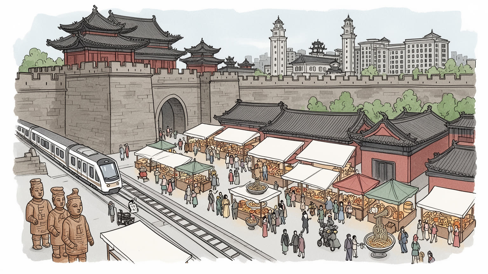
西安は中国内陸を束ねる古都で、関中平原、黄土高原、秦嶺の境界にあります。東西交通、軍需研究、西部開発、シルクロード外交が重なり、沿海部とは違う国家的な奥行きを示します。長安の記憶も今なお続きます。
航空宇宙、装備製造、電子情報、大学研究、ソフトウェア、観光、物流が成長を支えます。研究者や技術者の集積の裏で、建設、清掃、飲食、警備、配達、宿泊、屋台の仕事が都市の毎日を動かしています。層は厚いです。
城壁、鐘楼、碑林、唐の都城、兵馬俑は国家史の象徴です。同時に回民街のモスク、清真食、祭日、近隣商いが生活文化を作り、仏教寺院や大学の学問も古都の記憶を現在へつないでいます。信仰も今なお息づきます。
観光客は城壁、兵馬俑、大雁塔、回民街、博物館を巡ります。住民には住宅価格、渋滞、大気、教育、就職、混雑、郊外通勤が現実です。古都の魅力は、普通の生活と観光経済の距離にあります。課題も続く現実です。
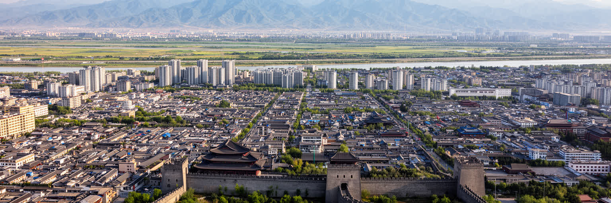
西安の地理は、関中平原の広がりと、南に横たわる秦嶺、北側の黄土高原を合わせて見ると分かりやすくなります。渭水流域の平地は農業、軍事、交通を支え、古代王朝が都を置く条件を整えました。城壁の内側は現在の観光中心ですが、都市の力はそこに閉じません。鉄道駅、高速道路、地下鉄、空港、開発区、大学城が平原の上へ広がり、歴史都市は内陸交通の結節として更新されています。秦嶺は水源、生態、保養地であり、都市の南限を示す壁でもあります。北西へ向かえば黄土の乾いた景観が近づき、東へ向かえば洛陽や中原への道が開けます。西安を読むには、壮麗な古都の中心軸だけでなく、川、山、乾燥、農地、郊外道路、研究施設の配置を一つの地形として見る必要があります。内陸都市であることは港を持たない弱さである一方、国内市場、軍需研究、西部開発、物流再編に深く関わる強さにもなります。水資源と大気の制約は成長の速度を抑え、郊外開発は農地と生態を押し分けます。古代からの都城計画は美しい記憶ですが、今日の西安では毎日の通勤距離、地下鉄の伸び、住宅地の選択、学校や病院の位置までを左右する現実の骨格です。乾いた冬の空気、夏の熱、城壁を渡る風、地下鉄の到着音、唐辛子と小麦の匂いも住民の身体に届きます。地理は遠い背景ではなく、生活費と健康を決める条件です。
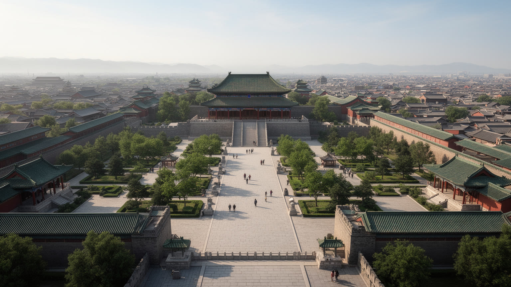
西安の都市イメージは、唐代長安の記憶と深く結びついています。大明宮、興慶宮、大雁塔、小雁塔、碁盤目状の街路、城門と中心軸は、都城が国家儀礼、宗教、交易、官僚制を束ねた時代を想像させます。ただし現在の市街は唐の都をそのまま残す博物館ではありません。明代城壁の内外に近代の街路、商業施設、住宅、地下鉄、観光施設が重なり、古都の記憶は再解釈されながら使われています。歴史の看板は都市の誇りを作りますが、過剰な演出や古風な意匠の反復は、住民の暮らしを背景へ押しやることもあります。長安の国際性を語る時には、朝貢、仏教、商人、留学生、音楽、衣装の華やかさだけでなく、制度、税、労働、城外の農村も含めて考える必要があります。春節の廟会や灯会では家族連れと高齢者が城門や広場を歩き、古都の演出は祝祭の日常にも触れます。観光地区の再整備は歩きやすさや収入を生みますが、古い住民、小商い、低家賃の生活空間が変わる負担も伴います。西安の古都性は、過去を飾ることより、過去を使って現在の都市をどう組み立てるかに表れます。大きな王朝の物語と、路地の食堂、学校、集合住宅、朝の市場が同じ地図にあるため、この都市の歴史は記念碑ではなく生活の中で更新されます。長安を読むことは、帝国の栄光と現代都市の調整を同時に読むことです。歴史公園や復元地区を歩くとき、そこに残された空白や失われた街区も想像したいものです。保存とは、華やかな時代だけを選ぶ作業ではありません。
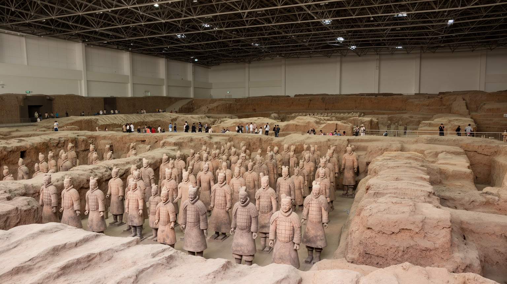
兵馬俑は西安観光の象徴であり、秦の統一国家、軍事組織、工房、権力の想像力を一気に可視化します。巨大な陶俑群は圧倒的ですが、それは単なる奇観ではありません。粘土の採取、成形、焼成、彩色、隊列の構成、陵墓の配置には、古代国家の労働力、技術、信仰、死後世界の観念が刻まれています。観光客は多くの場合、市中心から車やバスで郊外の遺跡へ向かいます。その移動の中で、都市と農村、土産物店、駐車場、ガイド、警備、研究施設、地元雇用が結びつきます。遺産は保存される対象であると同時に、地域経済を動かす資源でもあります。来訪者が増えれば修復費や雇用は生まれますが、混雑、商業化、周辺開発、解説の単純化も進みます。秦の歴史を暴君と偉業だけで語ると、道路、文字、法、軍役、労働負担、地方支配の複雑さは見えにくくなります。兵馬俑を読むことは、土の像を鑑賞するだけでなく、遺跡を守る科学、観光を管理する制度、周辺住民の生活、国家史の語られ方を読むことです。西安にとって兵馬俑は郊外の名所ではなく、都市の国際的な認知、学校教育、ホテル業、交通計画、文化産業を結びつける強い磁場です。その力をどう持続させるかが問われています。発掘されていない部分や退色した彩色は、過去を完全に所有できないことも教えます。遺産の魅力は、見える像と見えない時間の両方にあります。
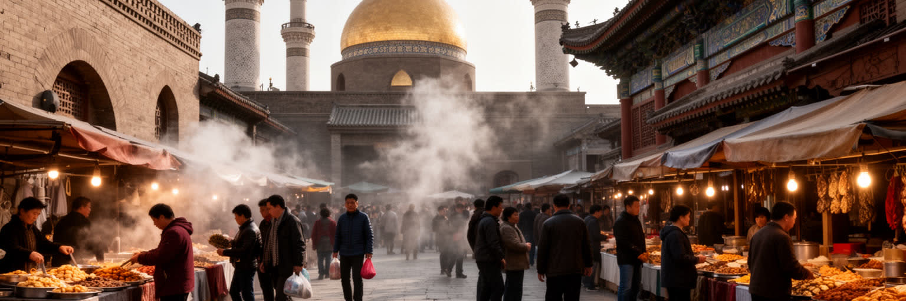
西安はシルクロードの東端として語られますが、その意味はラクダや異国趣味の図像だけではありません。長安には商人、僧侶、外交使節、職人、音楽、香辛料、宝石、知識が集まり、東西の交流は都の食、宗教、服飾、儀礼を変えました。現在の回民街と大清真寺の周辺には、イスラムを信仰する住民の食、礼拝、商い、家族の記憶が残ります。羊肉泡馍、麺、菓子、清真食の店は観光客に人気ですが、そこは同時に日常の買い物と信仰の場です。宗教文化を名物料理だけに縮めると、祈り、教育、婚礼、祭日、共同体の規範は見えません。観光化は商店に収入をもたらす一方、家賃上昇、混雑、衛生管理、過剰な演出も起こします。イスラム文化と漢族文化が長く隣り合ってきた歴史は、単純な融合ではなく、境界を保ちながら生活を調整する営みでもあります。西安の国際性は過去の栄光だけでなく、今も路地の店、モスクの門、家族経営の厨房、観光客の視線の中で続いています。シルクロードを読むには、交易のロマンとともに、移動した人々の制度、信仰、差異、共存の難しさを見なければなりません。回民街は写真映えする通りである前に、都市の多元性が日々交渉される生活空間です。観光客が食べ歩く同じ時間に、住民は祈り、仕入れ、子どもを学校へ送り、短動画で店の評判を広げ、近所の関係を保っています。その普通さが都市の厚みです。
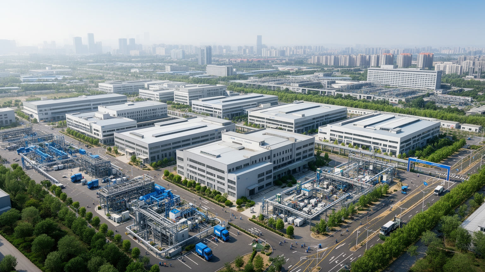
西安の現代産業を理解するうえで、航空宇宙と防衛関連の研究開発は欠かせません。内陸に位置する西安には、航空機、宇宙、電子、材料、計測、装備製造に関わる企業、研究所、大学が集まり、沿海部の輸出型産業とは違う国家的な技術基盤を担ってきました。これらの産業は高い専門教育、長い技能継承、品質管理、秘密保持、部品供給網を必要とします。研究者や技術者の仕事は目立ちますが、工場の保守、試験設備、警備、清掃、食堂、寮、通勤バス、家族の生活も産業集積を支えます。防衛や宇宙の領域は都市に安定した雇用と高い技能をもたらす一方、情報の閉鎖性や産業転換の難しさも伴います。民生向けの電子情報、ソフトウェア、スマート製造とどう接続するかは、西安の成長力を左右します。高度産業が増えれば住宅需要、教育需要、医療、交通も膨らみます。開発区の広い道路や研究施設だけを見ても、若い技術者のキャリア、外地出身者の定着、子どもの学校、職住距離までは分かりません。西安の産業都市としての重要性は、観光都市の表情の背後に、国家技術と内陸製造の厚い層を持つ点にあります。その層が大学、物流、都市サービスと結びつくほど、古都は現代の技術都市としても強くなります。産業の高度化が地域の中小企業や職業教育へ波及するかも大切です。大きな研究計画だけでなく、技能を学ぶ若者の進路が都市の底力を決めます。
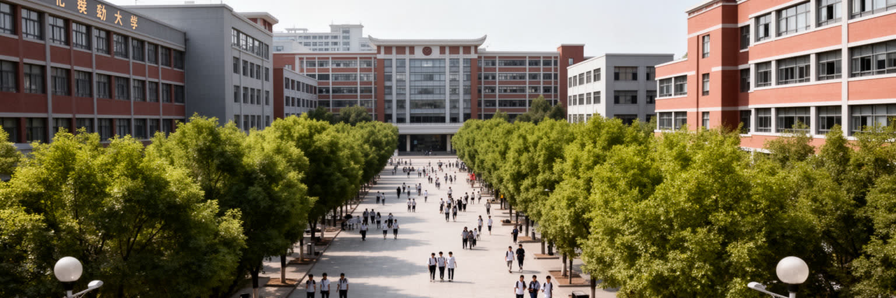
西安は中国内陸でも有数の大学都市です。西安交通大学、西北工業大学、西北大学、電子科技系や建築系の教育機関をはじめ、多くの学生と研究者が都市の日常を形作ります。大学は研究成果だけでなく、書店、食堂、寮、賃貸住宅、予備校、カフェ、起業支援、夜の屋台、就職市場を広げます。工学、航空宇宙、材料、電子情報、考古学、歴史学、都市計画などの学問は、西安の産業と遺産を結びつける知的な基盤です。一方で、卒業後の就職先、給与、住宅価格、戸籍、親の期待は学生の選択を左右します。優秀な人材が北京、上海、深圳、杭州へ移る流れもあり、西安が人材を残すには研究環境だけでなく、生活の質と企業の厚みが必要です。大学周辺の小さな店や安い食堂は学生文化を支え、卓球台やバスケットコート、古本市、買い物帰りの学生の列も街の音になります。研究都市の価値は論文数だけでは測れません。考古学の現場、博物館、工場、スタートアップ、公共交通、地域学校がつながることで、学問は街へ開かれます。若者が集まる都市は活気を持ちますが、競争、孤独、長時間学習、就職不安も抱えます。西安を大学都市として読むことは、古代史の研究と次世代産業、学生の財布と国家研究費が同じ都市で交差する現実を見ることです。留学生や地方出身の学生が増えるほど、言葉、食、住まい、就職情報を支える小さなサービスも重要になります。知識都市は教室の外で育ちます。
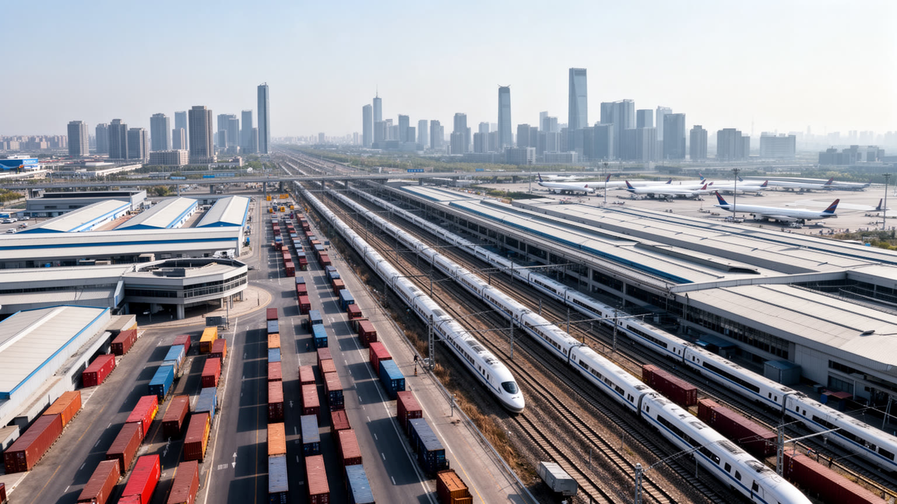
西安は海港を持たない内陸都市ですが、鉄道、高速道路、空港、地下鉄を通じて広い後背地と結ばれています。西安北駅の高速鉄道は北京、上海、成都、蘭州、鄭州などへの移動時間を縮め、咸陽国際空港は観光とビジネスの入口になります。物流では中欧班列や内陸港の役割が注目され、沿海部に頼りすぎない貿易ルートを作る試みも進みます。都市内部では地下鉄の延伸が通勤圏を変え、大学城、開発区、観光地、住宅地を結び直しています。ただし交通網の拡大は、必ずしも全員に同じ利便を与えるわけではありません。郊外へ移った住民は長い通勤を負い、観光期には駅や名所周辺の混雑が増えます。物流施設は雇用を生みますが、トラック交通、騒音、土地利用、大気への負荷も伴います。高速鉄道で近くなった都市間競争は、人材や投資を呼び込む機会である一方、若者がより大きな都市へ流れやすくなる経路でもあります。西安の交通を読むには、立派な駅舎や空港だけでなく、朝の地下鉄、郊外バス、観光バス、配送員の動き、倉庫地帯の道路を含めて見る必要があります。内陸都市の開放性は、港の代わりにどれだけ多方向の移動と物流を組み合わせられるかにかかっています。駅前の乗換、歩道の幅、地下鉄の発車音、荷物を運ぶ人の動線も、都市の実用性を左右します。交通は地図より身体で感じる制度です。
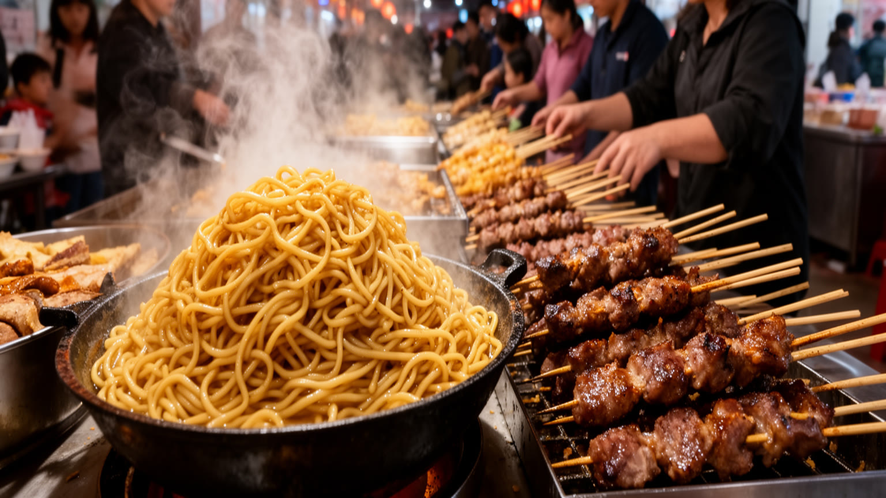
西安の食は、小麦文化、羊肉、香辛料、清真食、屋台、夜市が重なることで強い個性を持ちます。ビャンビャン麺、肉夹馍、羊肉泡馍、涼皮、串焼き、柿餅、各種の麺料理は、観光客の記憶に残るだけでなく、住民の昼食や夜食として街を動かしています。回民街はよく知られていますが、食文化は一つの通りに限られません。住宅地の小さな麺屋、大学周辺の安い食堂、朝市、団地の露店、深夜営業の店が、学生、労働者、家族、旅行者を受け入れます。食の魅力の背後には、早朝の仕込み、粉をこねる手仕事、肉の流通、衛生管理、長時間労働、家族経営のリスクがあります。観光化が進むほど、名物は分かりやすく並びますが、価格上昇や混雑で日常の店が変わることもあります。夜のにぎわいは都市の活力を示す一方、騒音、清掃、交通、安全、住民の睡眠とも調整が必要です。西安の食を読むことは、味の濃さや量の多さだけでなく、乾いた気候の中で発達した小麦の食卓、イスラム文化との関係、学生都市の安さ、観光客のまなざしを一緒に見ることです。唐辛子と焼けた小麦の匂い、湯気、呼び込みの声、短動画を撮る若者まで、夜の市場は感覚で記憶されます。安い一杯を支えるのは、家族の分担、仕入れの早起き、狭い厨房の暑さです。客席の回転や路上の清掃も、夜の食文化を支える大事な仕事です。
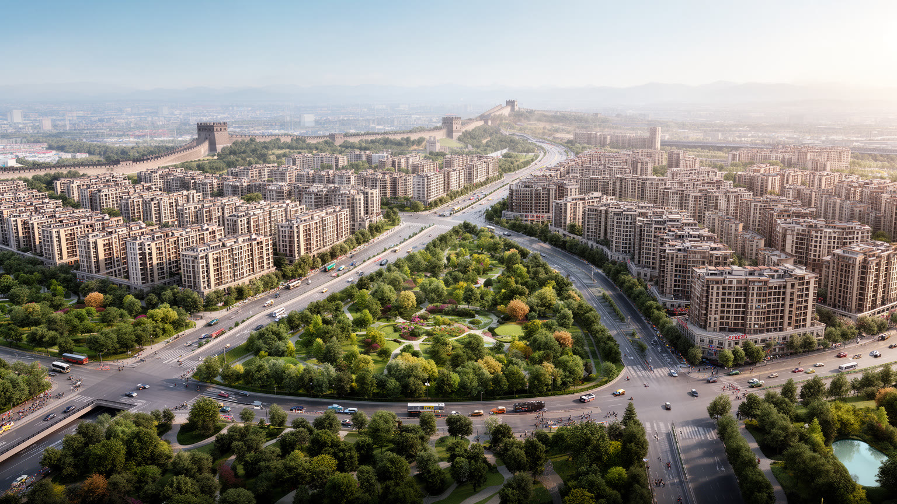
西安の都市拡張は、城壁の内側を中心とした古都のイメージを大きく超えています。高新区、経開区、曲江新区、浐灞、生態区、大学城、空港周辺など、複数の開発軸が住宅、オフィス、研究施設、商業施設を引き寄せました。広い道路、大型団地、ショッピングモール、地下鉄駅は現代的な生活を作りますが、開発の速度は農村、古い集落、耕地、水路、墓地、地域の記憶を変えていきます。郊外に住むことは新しい住宅と教育環境を得る機会である一方、通勤時間、車依存、公共サービスの不足、空き店舗のリスクも伴います。古都の景観保全と高層開発の調整は簡単ではありません。高さ制限や歴史地区の保護が必要でも、都市人口と産業を受け入れる空間は外側へ広がります。郊外開発が成功するには、地下鉄、学校、病院、公園、地域商店、雇用が同じ速度で整う必要があります。西安の生活圏を読む時、鐘楼から見える中心だけを基準にすると、長い通勤をする住民、新区の若い家庭、再開発で移った人々の現実を見落とします。都市の拡張は経済成長の表情であると同時に、誰が中心に近く住めるか、誰が遠い場所から働きに来るかを分ける社会問題です。城壁の外側で進む日々の選択こそ、現代の西安を形作っています。新しい街区が成熟するには時間がかかり、樹木の影、近所の店、子どもの遊び場、高齢者の散歩道、診療所の距離が後から効いてきます。都市の質は完成直後より日常で測られます。
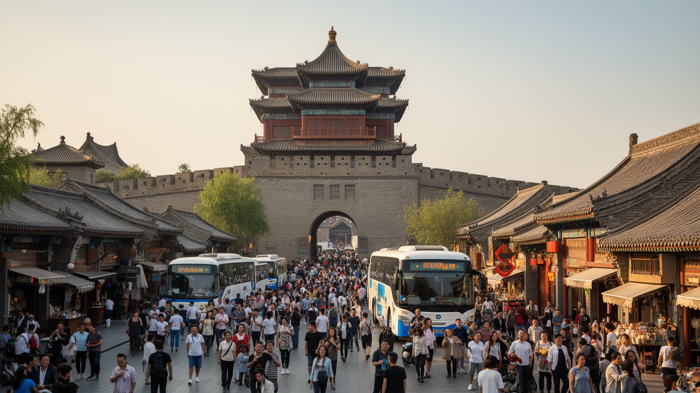
西安観光は、城壁、鐘楼、鼓楼、大雁塔、陝西歴史博物館、兵馬俑、華清池、回民街、唐風の夜景を結ぶ強い回遊性を持ちます。歴史の層が厚いため、短い旅行でも印象的な名所を組み合わせやすく、国内外から多くの人が訪れます。城壁ではランニングやサイクリングを楽しむ人も多く、観光と日常の運動が同じ輪郭を共有します。観光はホテル、飲食、ガイド、交通、土産物、文化公演、清掃、警備に雇用を生み、都市の知名度を高めます。一方で、人気の高い季節や休日には、入場予約、地下鉄、道路、狭い路地、飲食店に混雑が集中します。観光客の流れが生活道路や宗教空間へ入り込みすぎると、住民の買い物、礼拝、休息は圧迫されます。歴史演出が増えるほど、街が分かりやすくなる反面、実際の生活や複雑な歴史が背景化されることもあります。持続的な観光には、予約制、歩行者動線、公共トイレ、案内、多言語対応、夜間の安全、ゴミ処理、住民への配慮が欠かせません。西安の観光を読むには、名所をいくつ回ったかではなく、遺産の保存、地域経済、宗教生活、近隣の静けさ、労働条件がどう調整されているかを見る必要があります。古都の人気は大きな資産ですが、その価値は混雑を処理する現場の働きと、住民が暮らし続けられる環境によって守られています。写真を撮る人の流れと、そこを通って帰宅する人の流れが重なる場所では、小さな配慮が都市の印象を変えます。
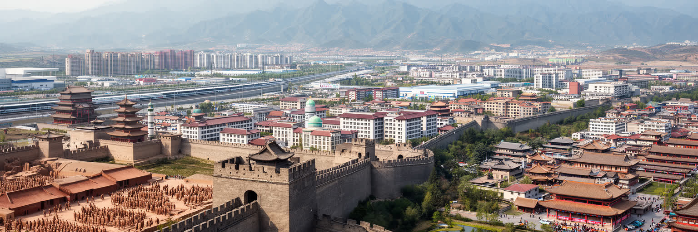
西安を世界都市として読む意味は、古代王朝の都でしたという事実だけではありません。関中平原の地理、秦と唐の国家記憶、兵馬俑、シルクロード、イスラム文化、大学、航空宇宙、装備製造、内陸物流、郊外開発、観光混雑が同じ都市圏で重なっています。北京や上海、深圳のような沿海部・政治中心・先端市場とは違い、西安は中国内陸の歴史的重心と技術基盤を示す都市です。観光客が見る城壁と夜景は魅力的ですが、その背後には研究所、工場、学生の就職、外地から来る労働者、住宅地の拡張、水資源、大気、宗教生活があります。秦腔や影絵、地方テレビや短動画の街案内、夜市の配信も、古都の声を現代のメディアへ移します。歴史都市としての誇りは、時に過去の栄光へ都市を閉じ込めますが、西安の現在はもっと動的です。古い中心を保存しながら、新区で産業を育て、地下鉄で生活圏を広げ、遺産を観光へつなげる作業が続きます。重要なのは、古都らしさを消さずに、現代の労働と暮らしを見えるようにすることです。西安の力は、過去を展示するだけでなく、過去の記憶を使って内陸都市の未来を組み立てる点にあります。山、平原、城壁、大学、工場、夜市を一緒に見ると、この都市は中国史の入口であると同時に、現代中国の内陸的な課題と可能性を映す場所として立ち上がります。観光の一日で見えるものと、住民が何年もかけて経験する都市は違います。